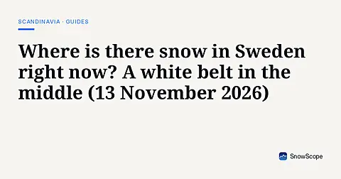

Himos snow: 0 cm in the forest, a first-snow ski loop on stored snow (14 November 2026)
On 13 November, weather stations around Himos measured zero snow on the ground at three nearby locations, with just 2 cm at Hyytiälä further west. The resort is opening a first-snow cross-country loop this weekend built from snow it has prepared itself, not from recent weather. The downhill slopes have no opening date yet, as November cold and snowmaking remain the only way to build a skiable base in central Finland.
See the live snow forecast for Hiihtokeskus Himosvuori in the SnowScope appSnow depth, powder alerts and the 3D map, free.

Prepared cross-country, bare slopes
Himos is laying its opening cross-country loop on 14 November using stored snow that the resort prepares with snowmaking machines. This is different from slope skiing. The slopes themselves stay closed until natural snow and cold nights give the snowmaking team enough room to build runs that will hold up to traffic.
The landscape around the resort is still brown. Snow fell in the past week—about 3 cm across the region—but it has melted away on the warm ground. That is why prepared cross-country on a managed loop can open while the forest floor remains bare.

Rain and sleet this week
The next seven days will bring about 2 to 3 cm of snow, but the story is more complex. The snow line sits around 220 m, almost exactly at Himos's summit height of 230 m. This means that at the base of the hill, rain will fall more often than snow. At mid-height, the precipitation will mix: sometimes snow, sometimes sleet, sometimes rain.
More than half the water falling at the base is forecast to arrive as rain. Higher up, rain is less likely, but the snow that does fall will be wet and heavy. These conditions do not build a stable base. Any snow will compress quickly and may crust if it freezes overnight or turn to slush under the sun.
November is the hard month
Himos records show that on 14 November, the typical natural depth is 2 cm. By 30 November it rises to 8 cm. December is when the snow pack builds seriously: by 15 December, the median depth reaches 16 cm, and by 24 December it climbs to 21 cm. The base usually sits around 54 cm by the peak of winter.
However, early season is unreliable. In 39 out of 100 past winters, there was zero snow on 14 November. Last winter was weak across the whole season, peaking at only 26 cm and holding snow for just 84 days. The long-term average is 148 snow days per winter, though that number is falling. The first 15 winters in the records averaged 160 snow days, but the most recent 15 winters averaged only 139.
What to expect at the loop
First-snow cross-country loops are short and narrow. Plan for laps around a circuit rather than a long tour into the forest. The prepared surface will be hard and fast in the morning when temperatures are below freezing, then soften during the day if the air warms. If rain falls on the track, it becomes sticky and slow.
Bring layers. November weather can swing from freezing early morning to above 0 °C by mid-afternoon. Waterproof gloves are wise because the track surface may be damp or wet.
Waiting for the slopes
Himos's downhill opening depends on cold nights and the snowmaking team's ability to build enough snow on the runs before the season begins. The resort will announce the date on its website when the forecast looks stable. Watch himos.fi for updates.
For off-piste skiing and forest trails, there is no base yet and they will not be safe this week. Stick to the prepared loop or wait for the official slope opening and the natural snow that must eventually arrive as winter deepens.
Tips for skiers
- Bring extra layers and waterproof gloves; rain and sleet are as likely as snow at the base, and temperatures will swing through the day.
- First-snow loops are short circuits. Expect three to five laps rather than a linear tour.
- Check himos.fi before you drive. The slope opening date depends on cold forecasts that have not yet arrived.
- Car parks and forest paths will be icy where rain has fallen on frozen ground. Walk slowly and wear gripping shoes.
- If you are planning an off-piste trip, wait until after the official slope opening. There is no snow base in the forest right now, and rockfall risk is high beneath thin patches.
About these numbers
Resort snow depths are the deepest snow on the resort's upper slopes on the date shown; they are estimates for an area, not a measurement at one point. Forecasts can change. Always read the official avalanche bulletin before going off-piste.
Official avalanche bulletins: EAWS – European Avalanche Warning Services
Cite this report
For research, teaching or the press: the numbers and charts are free to reuse under CC BY 4.0 with this citation.
SnowScope (2026), Himos snow: 0 cm in the forest, a first-snow ski loop on stored snow (14 November 2026), https://snowscope.app/blog/en/2026/11/himos-snow-14-november-2026.html, accessed 2026-11-14
SnowScope (Atlas Labs). (2026, November 14). Himos snow: 0 cm in the forest, a first-snow ski loop on stored snow (14 November 2026). SnowScope snow reports. https://snowscope.app/blog/en/2026/11/himos-snow-14-november-2026.html
BibTeX
@misc{snowscope2026himossnow14november2026,
author = {{SnowScope (Atlas Labs)}},
title = {Himos snow: 0 cm in the forest, a first-snow ski loop on stored snow (14 November 2026)},
year = {2026},
month = nov,
howpublished = {\url{https://snowscope.app/blog/en/2026/11/himos-snow-14-november-2026.html}},
note = {Published 2026-11-15 09:34 UTC; accessed 2026-11-14}
}· CC BY 4.0 · Methods, data and tools →
Hiihtokeskus Himosvuori: snow and temperature by height, this winter vs last (tools) →
Follow Hiihtokeskus Himosvuori
Free: a message when fresh snow is coming, and the forecast every morning.
More snow reports

On 13 November, 133 of Sweden's 322 weather stations had snow. The deepest lay in a belt from Dalarna to Västerbotten, with Sälen at 45 cm, while the far north remained almost bare.

Norway's deepest snow on 13 November is 37 cm in the hills north of Oslo and 44 cm in Lyngen, Troms. The coasts are bare.

Finland's snow on 13 November lies north of Oulu: 7 to 8 cm in the Rovaniemi region, but bare ground in the south where Helsinki measured 0 cm across all stations.